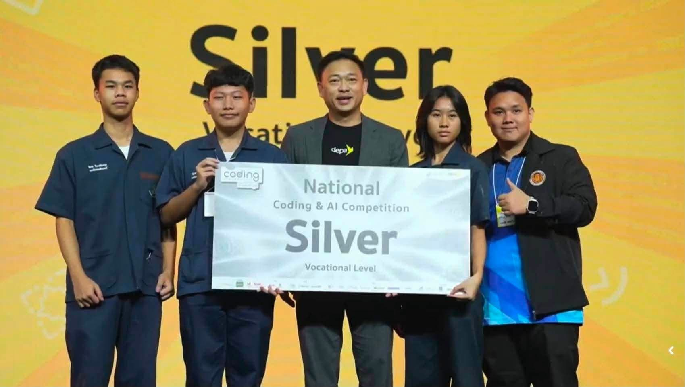

1
ประวัติส่วนตัว
- ชื่อ-นามสกุล
- นายนำโชค พูลเขตนคร
- วัน/เดือน/ปีเกิด
- 2 กันยายน 2537
- ภูมิลำเนา
- ตำบลลาดยาว อำเภอลาดยาว จังหวัดนครสวรรค์
- วุฒิการศึกษา
- ปริญญาตรี ครุศาสตรบัณฑิต สาขาวิชาคอมพิวเตอร์ศึกษา
- ตำแหน่งปัจจุบัน
- ครู กลุ่มวิชาช่างเทคนิคคอมพิวเตอร์ วิทยาลัยเทคนิคนครสวรรค์
2
ประสบการณ์การทำงาน
พ.ศ. 2566 – ปัจจุบัน — ครูผู้สอน วิทยาลัยเทคนิคนครสวรรค์
13 ก.ค. 2563 – 2566 — ครูผู้สอน วิทยาลัยสารพัดช่างอุทัยธานี
🏅 รางวัล Silver Award ระดับประเทศ — National Coding & AI Competition

ควบคุมทีมแข่งขันทักษะวิชาชีพ E-sports (ROV)
[เพิ่มผลงาน/รางวัล/การอบรมอื่นๆ ที่ต้องการแสดง]
3
ผลงานนวัตกรรมการสอน
📄
ระบบใบงานรายสัปดาห์
เลือกวิชา/สัปดาห์ ดูตัวอย่างและพิมพ์ใบงานได้ทันที ครอบคลุมหลายรายวิชา หลายภาคเรียน
เปิดดูเว็บไซต์ →📝
ระบบข้อสอบออนไลน์
ให้นักเรียนทำข้อสอบผ่านเว็บ ตรวจและแสดงผลคะแนนอัตโนมัติ
เปิดดูเว็บไซต์ →➕
PLUS MINUS
ระบบให้คะแนนพฤติกรรม/ความประพฤตินักเรียนแบบบวก-ลบคะแนน พร้อมบันทึกประวัติ
เปิดดูเว็บไซต์ →🎟️
Token Arena
ระบบโทเคนสำหรับกิจกรรมในชั้นเรียน ให้/รับคะแนนระหว่างนักเรียนแบบเรียลไทม์
เปิดดูเว็บไซต์ →📤
ระบบส่งงาน
นักเรียนส่งไฟล์งานออนไลน์ ครูตรวจและให้คะแนนผ่านหน้าเว็บเดียว
เปิดดูเว็บไซต์ →🏆
ระบบจัดการแข่งขัน ROV
จัดตารางแข่งแบบพบกันหมด คำนวณอันดับ และตัดสินรอบชิงชนะเลิศอัตโนมัติ
เปิดดูเว็บไซต์ →📋
Lesson Plan Generator
เครื่องมือช่วยร่างแผนการจัดการเรียนรู้ให้ครูประหยัดเวลาในการเตรียมสอน
เปิดดูเว็บไซต์ →4
แนวคิดการจัดการเรียนรู้
ออกแบบย้อนจากเป้าหมาย (Backward Design) — เริ่มจากตัวชี้วัดที่ต้องการให้ผู้เรียนบรรลุ
ก่อนออกแบบเครื่องมือวัดผลและกิจกรรมการเรียนรู้ ไม่ใช่เขียนแผนจากเทมเพลตแล้วเติมเนื้อหา
แตกตัวชี้วัดระหว่างทาง-ปลายทาง — เมื่อเนื้อหากว้างเกินกว่าจะสอนจบในคาบเดียว
ออกแบบจุดตรวจสอบความก้าวหน้าระหว่างทางเพื่อปูพื้นฐานก่อนถึงเป้าหมายปลายทาง
เรียนรู้จากสถานการณ์ใกล้ตัว — ใช้ CBL และ PBL ผูกเนื้อหาวิชากับชีวิตประจำวันของผู้เรียน
ให้ผู้เรียนลงมือคิดและแก้ปัญหาเอง
เทคโนโลยีเป็นทางเลือกเสริม ไม่ใช่เงื่อนไข — ทุกกิจกรรมที่ใช้เทคโนโลยี (เช่น QR Code, เว็บแอป)
มีแผนสำรองแบบไม่ใช้อุปกรณ์เสมอ เพื่อไม่ให้ผู้เรียนคนใดเสียโอกาส
สร้างเครื่องมือเอง ใช้งานได้จริง — พัฒนาเว็บแอปพลิเคชันสนับสนุนการสอนด้วยตนเอง
แก้ปัญหาที่พบในห้องเรียนจริงอย่างเป็นรูปธรรม
5
ติดต่อ
โทรศัพท์
อีเมล
[ใส่อีเมล]
Facebook
[ใส่ลิงก์/ชื่อเพจ]
สถานที่ทำงาน
วิทยาลัยเทคนิคนครสวรรค์